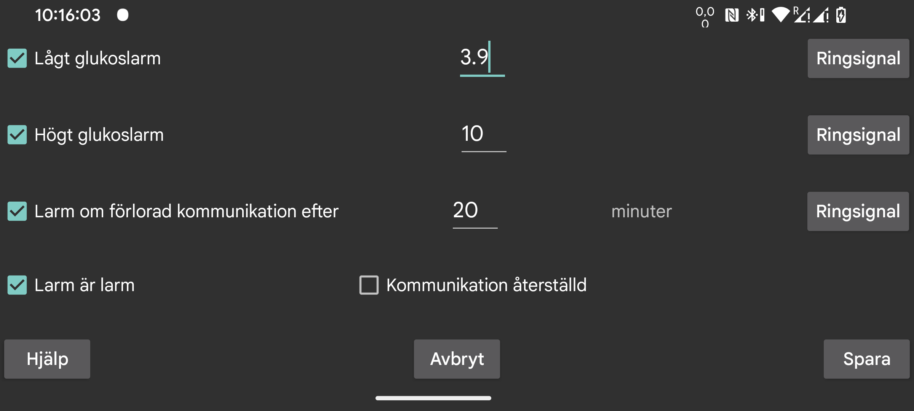

Värden som tas emot via Bluetooth kan användas för att ställa in larm för låga och höga glukosnivåer.
Vid vilken nivå (eller under) ett larm ska utlösas.
Vid vilken nivå (eller över) ett larm ska utlösas.
Ange hur många minuter som ska gå innan ett larm utlöses om ingen glukosnivå tas emot via Bluetooth.
Larmen slutar när något av följande villkor uppfylls:
Ibland slutar sensorn tillfälligt att fungera. Om du aktiverar den här funktionen får du ett meddelande när sensorn börjar fungera igen, men bara om du har sett att värdet saknades i Juggluco-appen. Om du endast märkte att värdet saknades genom Jugglucos meddelande eller dess klockvy, kommer inte aviseringen för återställd kommunikation att aktiveras.
För varje larm kan du välja vilken ringsignal som ska spelas och hur länge.
När detta är aktiverat spelas ringsignalen för låg och hög glukosnivå samt signalförlust enligt Androids larmkategori. Detta innebär att volymen styrs av larmvolymen i Android-inställningarna, och larmet tystas inte om telefonens ljud är avstängt eller inställt på vibration. Om "Larm är larm" inte är aktiverat används telefonens vanliga ringsignalsvolym. Detta gäller alltid för notifikationer om tillgängliga värden.